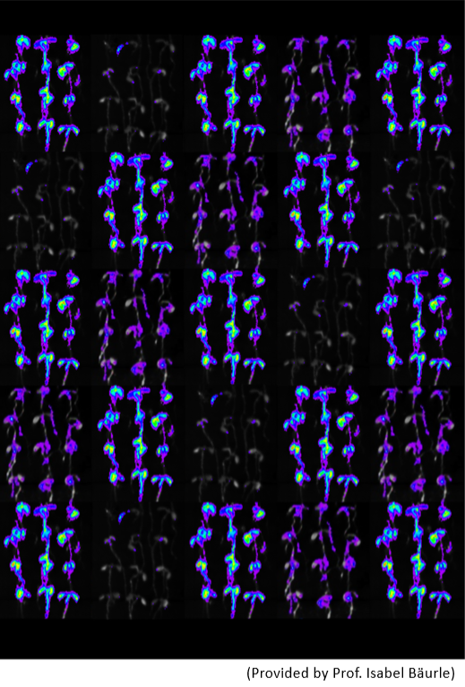

最新研究
(2018)不同熱休克因子及染色質修飾作用參與了對高溫逆境之組織自主性轉錄記憶. Plant J.
劉祥欽†、Jörn Lämke†、林修穎†、洪孟如、劉冠鳴、常怡雍*、Isabel Bäurle*
常怡雍 https://doi.org/10.1111/tpj.13958

對環境刺激產生記憶是生物體共同的行為，讓它們在面對隨後的相同刺激時啟動更快速或是更強烈的防禦反應。植物對於環境逆境的記憶行為，一部分表現在基因的轉錄上，當再次遇到同樣的逆境刺激時，其防禦基因的表現可以產生非常顯著的變化，亦即”轉錄記憶(transcriptional memory)”。先前，本中心常怡雍老師的研究室利用植物生理與分子生物實驗發現了熱休克因子HSFA2在阿拉伯芥熱逆境記憶上扮演重要角色，而德國波茲坦大學葆勒教授的研究團隊則進一步揭示了HSFA2之作用機制，顯示HSFA2影響染色質修飾與某些基因之轉錄記憶有關聯，但並不瞭解在植物細胞裡，有多少基因會對熱逆境產生記憶。在台德雙方團隊的努力合作下，我們發表了此篇論文。藉由轉錄體的分析，我們在阿拉伯芥中找到約 90個對熱逆境會產生記憶的基因，其中大部分基因的轉錄記憶都需要HSFA2才能產生，而這樣的記憶大都可持續至少三天以上；除了HSFA2，HSFA1也對於轉錄記憶的產生扮演重要角色；這些轉錄記憶的機制存在於植物所有的組織當中，因此具有高度的組織自主性；記憶基因啟動子上的組蛋白H3的第四個胺基酸(離胺酸H3K4)在熱處理後會發生超甲基化，而非記憶基因啟動子上的H3K4則不會有明顯的甲基化；記憶基因的啟動子可授予記憶能力于異源基因。總結來說，經由熱所誘導的轉錄記憶機制是廣泛且持久的，本研究所提出的高等植物體細胞逆境記憶架構，可做為未來相關研究的參考。